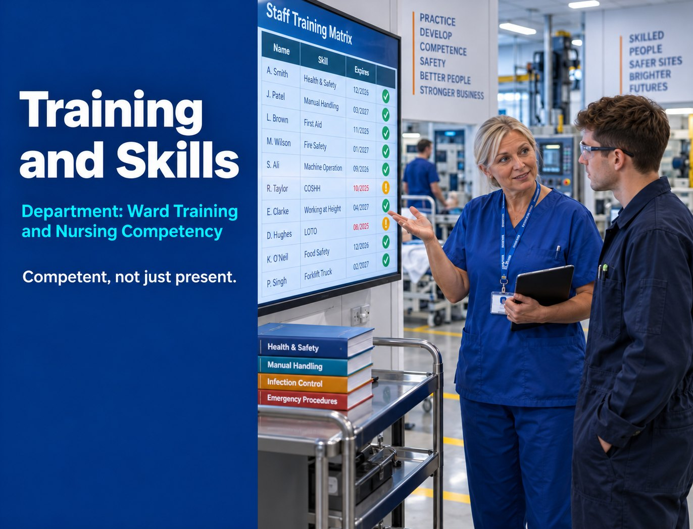

Competency Mapping
Training matrices that show who is qualified for what, and when it expires.

Department: Ward Training and Nursing Competency
A method statement that claims a trained, competent workforce is a claim. A training matrix with names, dates and expiry tracking is evidence, and evaluators are trained to spot the difference.
Without documented training and skills records, a buyer assumes unverified workforce competence behind method statement claims, key-person dependency with no succession plan, social value commitments with no substance behind them, inconsistent site safety competence and a workforce that can't be evidenced under audit.
None of that may be true of you. It does not matter. In a tender, the assumption is what gets scored.
Most manufacturers think competence is about running the course. It is about being able to produce the certificate, the date and the sign-off, six months later, without a scramble.
Training is an activity. Competence is a proof point. Auditors do not want to hear that you train your people. They want the matrix.
Training matrices that show who is qualified for what, and when it expires.
NVQs, apprenticeships, trade certifications, IOSH and NEBOSH qualifications.
A Skills Development Plan and apprenticeship commitments that score in a tender.
Key-person succession planning and audit-ready training documentation.
| Tender criterion | What this service contributes | Score effect |
|---|---|---|
| Quality | Competency evidence supports method statement credibility | Major |
| ESG | Skills Development Plan and apprenticeships score as social value | Major |
| Safety | Trained, competent staff support safe operation | Major |
| Risk | Reduces key-person and delivery risk | Moderate |
| Delivery | Trained, qualified workforce reduces delivery risk | Moderate |